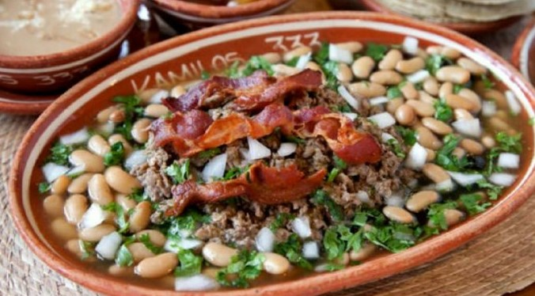

Carne en su Jugo

ingredientes:
- 500gr de tocino
- 1Kg de bistec de res
- 4 tomates verdes
- 2 dientes de ajo
- 2 chiles serrano
- 1/2 cebolla
- 1cda de consome de pollo
- 2tz de frijoles
- sal
- pimienta negra
- cilantro
- cebolla picada
- aceite vegetal
duración aprx: 40min cantidad: 2kg
Preparacion:
Salpimiente y corte el bistec en cortes pequeños
Corta el tocino, agrégalo a una olla caliente con aceite
Una vez dorado el tocino, incorpora el bistec y cocina por 10 minutos
licua el tomate, los ajos, los chiles, la cebolla y el consomé de pollo. Agrega un poco de agua y sal.
agrega la salsa a la carne. Cocina por 20 minutos
Sirve con frijoles, cilntro picado, y cebolla picada